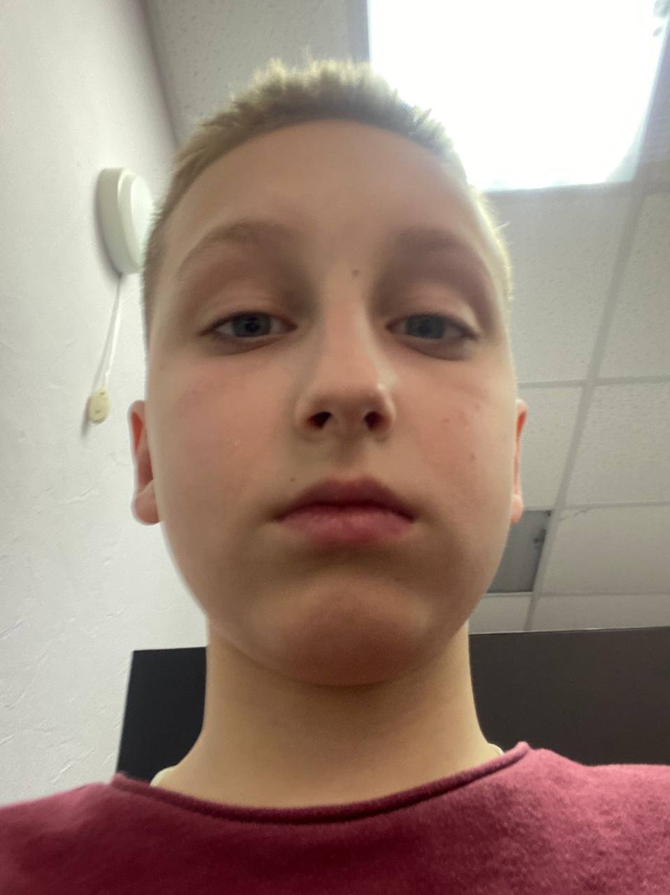

Об игре

PUBG (PlayerUnknown’s Battlegrounds) — это многопользовательская онлайн-игра в жанре королевской битвы, где до 100 игроков сражаются друг с другом на большой карте, чтобы остаться последним выжившим. Игра сочетает в себе элементы тактики, выживания и экшена.
Игроки начинают без оружия и снаряжения, и должны исследовать карту, искать оружие, боеприпасы, броню и другие ресурсы, чтобы повысить свои шансы на победу. В процессе игры зона безопасной территории постепенно сужается, вынуждая участников сталкиваться в ближнем бою.
Игра получила широкое признание благодаря реалистичной графике, динамичному геймплею и возможности играть как в одиночку, так и в командах. PUBG стала одной из самых популярных игр в жанре королевской битвы и оказала значительное влияние на развитие этого жанра.
Metro Royale в PUBG
Metro Royale — это самостоятельный режим в PUBG Mobile, который отличается от классической королевской битвы. В нем доступны уникальные локации, новые цели и механики, связанные с выживанием и сбором ценного лута. Этот режим происходит во вселенной Metro 2033 и включает в себя сражения с монстрами, ботами и другими игроками, а также эвакуацию с награбленным.
Как запустить режим
Для этого нужно выбрать режим «Другое» в меню и выбрать Metro Royale. Требуются последние обновления, уровень аккаунта не ниже 10 и выполнение определённых условий.
Отличия от обычной битвы
Metro Royale — это отдельная игра внутри PUBG, с уникальными картами, задачами и механиками, отличающимися от классической королевской битвы.
Об авторе
Михайлов Глеб - начинающий автор, родился и вырос в г. Чебоксары. В настоящее время сотрудничает с местным издательством, где и была опубликована его первая работа.
Об авторе

Михайлов Глеб - начинающий автор, родился и вырос в г. Чебоксары. В настоящее время сотрудничает с местным издательством, где и была опубликована его первая работа.